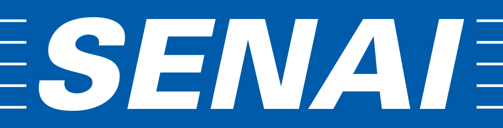

Airton Ribeiro Manfrini Junior
Olá! Sou um profissional apaixonado por técnologia, e atualmente buscando voltar para atuações de desenvolvimento e análise de dados. Minha experiência inclui um conhecimentos em Java, Spring Boot, Angular e Python, combinado com uma rica experiência em análise de dados. Minha trajetória abrange desde o suporte técnico até a gestão de recursos, o que me proporcionou uma visão abrangente das necessidades de negócios e habilidades técnicas. Estou entusiasmado para aplicar meu conhecimento diversificado e colaborar na criação de soluções inovadoras e impactantes. Vamos construir o futuro juntos!
Contatos
-
email: airton.manfrini@hotmail.com
-
telefone: +55 43 99666 3806
Links e Redes Sociais
 linkedin
linkedin github
github instagram
instagram twitter
twitterHabilidades
HTML
CSS
Java
Spring Boot
Microsoft Office
Python
Microservices
Angular
SQL
Power BI
Metodologias Ágeis
Delphi
Formação Acadêmica
-
Tecnologia em Big Data e Inteligência Analítica
Pontifícia Universidade Católica do Paraná Janeiro 2022 - Julho 2024 -
Tecnologia em Análise de Desenvolvimento de Sistemas
Pontifícia Universidade Católica do Paraná Janeiro 2022 - Julho 2023 -

Técnico em Informática
SENAI Apucarana Janeiro 2011 - Julho 2012
Experiência Profissional
Atos Brasil
-
Analista de Negócios
Maio 2023 - PresenteDesempenhei um papel de destaque como Analista de Negócios, colaborando diretamente com o cliente Petrobras. Minhas responsabilidades abrangem a supervisão do controle orçamentário e fornecimento de suporte estratégico para a gestão da equipe. Atuei como elemento chave na aplicação da Metodologia SAFE, onde desempenhei o papel crucial de Suporte ao RTE (Release Train Engineer), coordenando de forma eficaz múltiplos times.
-
Workforce and Resource Management
Outubro 2021 - Abril 2023Contribuí significativamente na gestão estratégica de projetos como parte da equipe Workforce and Resource Management. Liderei o desenvolvimento, aprimoramento e supervisão de Indicadores-Chave de Desempenho (KPIs) e Qualidade de Dados em toda a região da América do Sul. Além disso, assumi a responsabilidade pela gestão do processo de Subcontratação em toda a região sul-americana, e participei ativamente de reuniões estratégicas de nível local e global.
-
Analista de Projetos
Janeiro 2018 - Setembro 2021Durante essa fase, atuei em duas etapas distintas. Inicialmente, integrei a equipe de Service Operations, cujo foco era assegurar a adesão dos Projetos e Gerentes de Projetos aos padrões globais de Segurança, Qualidade e Risco. No âmbito dessa equipe, despendi esforços em gerar relatórios vinculados ao cumprimento dessas atividades e na cobrança daqueles gestores que ainda não as haviam cumprido. Além disso, assumi a responsabilidade de garantir a execução dos procedimentos de segurança, incluindo a atualização de servidores, apoio na resolução de incidentes de segurança e o compartilhamento de informações com as equipes globais.
Posteriormente, passei a integrar a equipe de Gerenciamento de Recursos, onde desempenhei um papel fundamental na supervisão e aprovação de novas contratações, antes que fossem encaminhadas à equipe de recrutamento e seleção. Nesse contexto, concentrei-me em gerar relatórios para avaliar a disponibilidade de candidatos internos, reportar o status dessas contratações e criar métricas relacionadas ao andamento das atividades da equipe.
-
Analista de Suporte Técnico
Junho 2016 - Dezembro 2017Fui responsável por oferecer suporte aos usuários finais da RIO2016 e outros clientes após o encerramento dos Jogos Olímpicos no Brasil. Durante esse período, desempenhei um papel vital no gerenciamento eficiente das filas de atendimento, atendendo solicitações, controlando o backlog e contribuindo com a geração de relatórios. Além disso, ofereci assistência contínua visando a melhoria contínua de nossos processos e operações..
Vision Distribuidora
-
Desenvolvedor Junior
Setembro 2014 - Maio 2016Durante esse período, participei ativamente do desenvolvimento de um sistema interno utilizando a linguagem Delphi. Minhas tarefas envolviam a criação de novas funcionalidades e recursos, bem como a geração de relatórios para auxiliar a equipe comercial. Além disso, ofereci suporte aos vendedores, orientando-os na utilização e instalação do aplicativo de vendas. Também assumi a responsabilidade de cuidar da manutenção e suporte dos computadores da empresa, contribuindo para a operacionalidade do ambiente tecnológico.